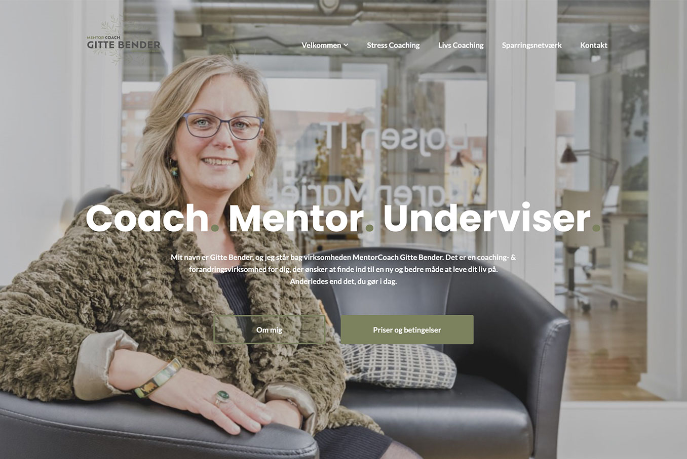

MULTIMEDIEDESIGNER

Mine Kerneværdier
Hvis du ansætter mig, er du garanteret en positiv og imødekommende arbejdskraft, som tilpasser sig efter dine behov og rutiner. Jeg tillægger altid mit arbejde stor værdi, og holder kreativitet og faglighed i fokus. Jeg tilgår mine opgaver med stor professionalisme og dedikation, og vil altid gøre mit bedste, for at give dig det bedst mulige resultat. Jeg har en bred vifte af kompetencer og værktøjer, som du kan læse mere om på denne side.
Digital Kunst
Herunder ses et par eksempler, på et forsøg med at overføre mine egne malerier, til grafisk kunst. Billederne er tegnet på baggrunde af private fotografier:
Web- og applikationsdesign
Herunder ses to eksempler på henholdsvis webdesign og applikationsdesign. Webdesignet er udført i samarbejde med en klient, som ønskede en mere imødekommende forside på hendes hjemmeside. Applikationen er udviklet i forbindelse med et studieprojekt omhandlende Design Thinking. Billeder i appen er fundet på nettet uden ophavsret:
Fotografi
Herunder ses en række eksempler på en serie af fotografier, som er taget forskellige steder i den danske natur i året 2022: